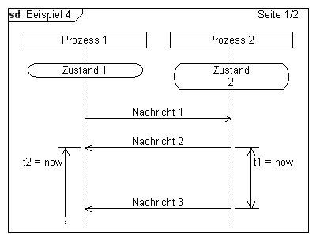
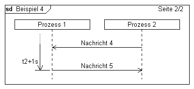

Syntaxbeispiel
Beispiel
Syntaxbeispiel
Beispiel
|
DiagramName: Beispiel 2 DiagramStyle: uml PageSize: 400, auto PageMargins: 10, 10, 10, 10 process: p1, "Prozess 1" process: p2, "Prozess 2" state: p1, Zustand 1 state: p2, Zustand\n2; msg: p1, p2,Nachricht 1; msg: p2, p1, Nachricht 2 timerbegin: t2, p1, t2 = now timerbegin: t1, p2, t1 = now,r; ; ; msg: p2, p1, Nachricht 3 timerend: t1 NextPage: msg: p2, p1,Nachricht 4; msg: p1, p2, Nachricht 5 timerend: t2, t2+1s |

 |
Siehe auch